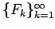
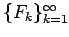
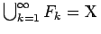
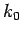
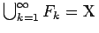
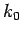

Inhalt Index DeskTop Bronstein

 Funktionalanalysis Metrische Räume Vollständige metrische Räume Einige fundamentale Sätze in vollständigen metrischen Räumen
Funktionalanalysis Metrische Räume Vollständige metrische Räume Einige fundamentale Sätze in vollständigen metrischen Räumen


Sei  ein vollständiger metrischer Raum und  eine Folge von abgeschlossenen Mengen in
ein vollständiger metrischer Raum und  eine Folge von abgeschlossenen Mengen in  mit . Dann existiert mindestens ein Index , für den die Menge Fk0 einen inneren Punkt enthält.
mit . Dann existiert mindestens ein Index , für den die Menge Fk0 einen inneren Punkt enthält.